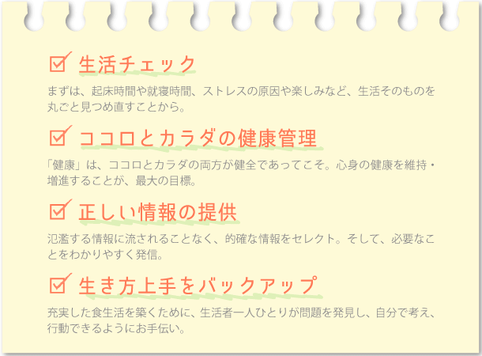
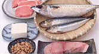

『食生活アドバイザー®』は、広い視野に立って食生活をトータルにとらえ、
健康な生活を送るための提案ができる"食生活全般のスペシャリスト"。
『食』に対する関心が高まっている中で、今後ますます活躍が期待されています。

-

- 
- 栄養素の働き、病気と食事の関わり、運動と休養などを学び、心と体の健康づくりをサポート。
-

- 調理のコツや献立の工夫、行事と料理、テーブルマナーを心得て、暮らしの中の「食」を演出。
-

- 食品の分類法を把握し、生鮮食品・加工食品の表示、アレルギー表示、栄養表示を読み解く。
-

-

- 食中毒予防の決め手となる衛生管理。食生活の安全を守るために、具体的な対策をマスター。
- 流通の役割や小売の形態が多様化する中で、商品を正しく選ぶ目を養い、賢い消費者をめざす。
- 身近な税金や法律、経済など「食」を取り巻く消費生活と社会のしくみについて理解を深める。
流通技術、食品加工技術の革新、サービス形態が変化し、食生活においてさまざまな問題が起きています。バランスの悪い食事による肥満や健康障害、食の安全や環境問題など、官民あげて食生活の改善に本格的に取り組む時代になりました。そして、その中心となるのが「食育基本法」です。
「食育基本法」は、2005 年7 月15 日より施行された法律です。食育に関する基本理念を定め、国民の健康と、豊かな人間性を育むため、食育の推進を課題とし、現在及び将来にわたる、健康で文化的な国民の生活と、豊かで活力ある社会の実現に寄与することを目的としてつくられました。 食育を「生きる上での基本」と位置付け、心身の成長や人格形成に大きな影響を及ぼすと指摘しています。国や自治体に食育推進施策の策定を義務付ける一方、国民には健全な食生活を農林水産業者や食品業界に安全な食の提供を求めています